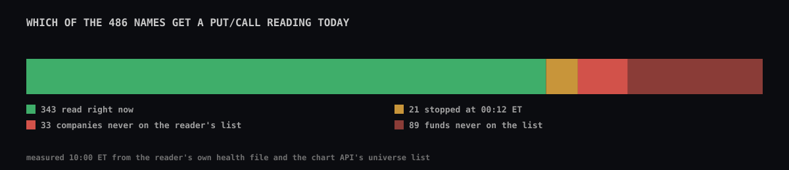
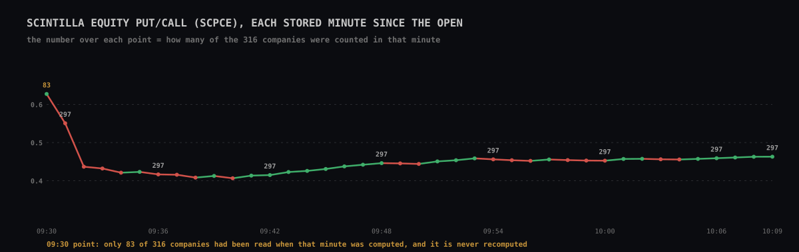
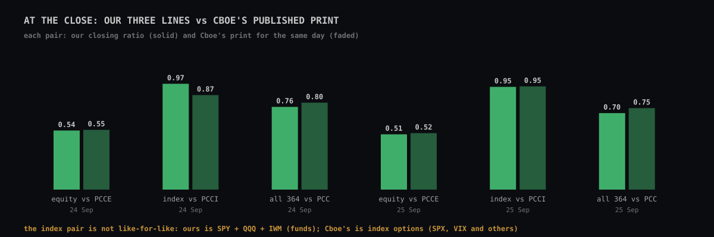
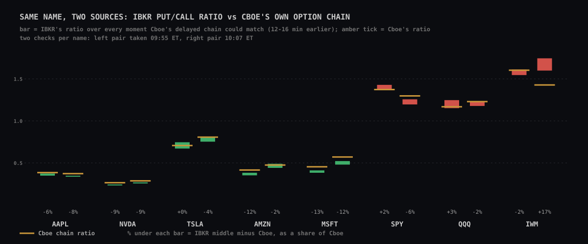

Monday 28 September 2026, measured between 09:53 and 10:10 ET during the session · read-only: nothing was restarted, written, deployed or changed · lane PUT/CALL AUDIT
The short answer. The numbers that are produced are added up correctly, and at the close our equity line lands within 1–2% of Cboe's own published equity number. But three things are wrong today:
And to the question "some tickers have put/call, others not": no screen on the Station or the Hub shows a single ticker's put/call today. The readings exist per name in the database, but only the group lines (equity, index, sectors, cohorts) and Cboe's daily numbers are served and drawn. The gaps you would notice are in those group lines: the 21 silent names, and cohorts that jump when they are built from the shorter member list.
| Place | What it shows | Where the number comes from | Live? |
|---|---|---|---|
| Station · MACRO 4H page (last pane) and INTERNALS page | PCC — Cboe's total put/call, one number per day, with a small puts/calls table in the corner | Cboe's published daily print, through the chart API | No — the last finished session (Friday 25 Sep today) |
| Station · any chart where you type PCCE, PCCI or PCSPX | Cboe equity / index / SPX put/call, daily; PCCE and PCCI carry our intraday line as a companion underneath | Cboe print + ibkr_putcall_minute | Companion line yes |
| Station · SCPCE / SCPCI typed as a symbol | Scintilla equity and "index" put/call, minute by minute | IBKR readings → minute job → ibkr_putcall_minute → chart API | Yes, about 1 minute behind |
| Chart API only (no pane uses it) | One line per sector (11) and per cohort (119): SCPC.SECTOR.Technology, SCPC.COHORT.AI_HARDWARE… | same minute table | Yes, served; not drawn anywhere |
| Hub · Sentiment tab, "Put / call ratio" card | PCC five-day average, scored like CNN's dial | Cboe daily PCC through the chart API | Daily |
| Hub · Regime card | "equity put/call (20d)" 0.572, 79.8th percentile | a saved file, data/regime/regime-static.json | No — a snapshot |
| Anywhere, per single ticker | nothing — the chart API answers "not tracked" for a ticker put/call | rows exist in ibkr_option_volume, unserved | — |

| Group | Names | Why no reading | Evidence |
|---|---|---|---|
| Silent since 00:12 ET (21) | TTWO TXN UBER UNH UNP UPS URI USAR USB USO V VICI VLO VMC VRT VRTX VST VTI VTR VZ WBD | At 00:12 ET the Gateway lost its link to IBKR for a moment ("connectivity lost", then "restored - data maintained"); 39 requests failed to send while it was down. These 21 were the names being subscribed at that instant (positions 320–340 of the list, all in one batch). The reader never reconnects or re-resolves them, so every sweep since asks and gets nothing back. [VERIFIED silence] [THEORY cause] | Last row of each: 04:12:12 UTC. Reader health file lists exactly these 21 as "absent" every sweep since (sweep 1,467 at 10:10 ET). No error has been written since 00:15 ET, so nothing tells anyone. |
| Companies never on the list (33) | AAOI ACHR ALB AMKR AVAV BKSY BTDR COHR CRML GLW HIVE HUBB KTOS LEU LUNR NOK NVTS OUST PL POET RDW RIOT SATL SERV SIDU SPIR SQM STM SYM TECK TSEM UUUU VSH | The reader's list (spool/universe.json) has 364 names from 24 Sep. The Hub admitted 122 more on 26–27 Sep; nobody refreshed the reader's list. | Chart API /universe = 486 names; reader list = 364; every reader name is still on the live list. |
| Funds never on the list (89) | the sector and style funds: IYW, IGV, KRE, XBI, VGT, RSPT, VXX, URA, TAN, SCHD, AGG… | Same frozen list. Funds are left out of the equity and sector lines on purpose, but they would feed the "all names" estimate and their own cohorts. | same |
| Weekend | all | The Gateway was logged out Sunday 05:0x → 21:2x ET (hourly counts drop from ~39,000 to 67, then back). No trading-day number was lost: Sunday is not a session. | reader file for 27 Sep, hourly counts |
| "No options" / "no volume yet" | none today | Every one of the 343 live names returned a call and a put count. No name was refused by IBKR for lack of options or permissions. | no subscription errors in the reader's health file |
What this does to the lines you see: the equity line says "297 of 316" — the 19 missing are the silent companies above. The 122 never-listed names are also missing from the cohort table the lines are built from (ticker_cohorts holds none of them), so no cohort line counts them in its "of".
A cohort line should have one member count all day. Today 53 of the 119 cohort lines carry two different counts. The minute job normally builds AI_HARDWARE from its 43 members; in two minutes it built it from 35:
| Minute (ET) | AI_HARDWARE counted | Put/call |
|---|---|---|
| 10:02 | 42 of 43 | 0.3831 |
| 10:03 | 42 of 43 | 0.3852 |
| 10:04 | 34 of 35 | 0.3718 |
| 10:05 | 42 of 43 | 0.3895 |
| 10:06 | 34 of 35 | 0.3774 |
| 10:07 | 42 of 43 | 0.3943 |
At 10:04 and 10:06 ET all 53 of those cohorts lost members at once — 197 member slots, the same 197 both times — and 5 one-member cohorts vanished for that minute: 1,054 member slots in all instead of 1,256. Other examples: BLUE_CHIP 106 vs 128, LARGE_CAP 188 vs 226, AI_SOFTWARE 9 vs 13. The sector, equity and index lines never change count. On 24 and 25 Sep, 70 of the 119 cohorts had more than one count each day (AI_HARDWARE: 43, 35 and 31). All 43 AI_HARDWARE members are among the 364 names the reader reached today, so this is not a reading gap. [VERIFIED switching]
Likely cause [THEORY]: the minute job reads the cohort table (ticker_cohorts, 1,282 rows) in pages of 1,000 with no fixed order. Without a fixed order, the database can hand back the second page overlapping the first, so some members are skipped. The sector list comes from company_profile, which has 440 rows, fits in one page, and never switches. That fits, but I have not reproduced a bad read.
I rebuilt the equity line from the raw IBKR readings for the first 33 stored minutes since 09:30 (each company's newest reading, not older than 15 minutes; add the puts, add the calls, divide once). With one fixed cut-off a few seconds into each minute, 22 of 33 minutes checked match to the unit and the median gap is 0.0%; the rest differ only because the minute job starts at a slightly different second each time. The running totals never fell inside the session, on any name or any line. [VERIFIED]
Two small wrinkles: the 09:30 point was computed in the first seconds of the open, when only 83 of 316 companies had been read, and it is never recomputed — the first point of the day's chart is built on a quarter of the names. And Realty Income (O) is flagged as a fund in the company table, so it is left out of the equity and Real Estate lines.


Cboe's daily prints (PCC, PCCE, PCCI) count only trades on Cboe's own exchanges, but every stock; we count every exchange but only our names. Agreement within 1–2% on the equity line is as good as that comparison can be. The database's own comparison table has only 24 Sep filled: 25 Sep still says "no Cboe print" because the 08:45 ET catch-up job builds a broken address (see fixes). Cboe's 25 Sep print is on the chart API.

| Name | Cboe chain ratio (09:55 · 10:07) | Own delay (09:55 · 10:07) | IBKR minus Cboe, puts (09:55 · 10:07) | Reading |
|---|---|---|---|---|
| AAPL | 0.385 · 0.373 | 14.1 · 13.6 min | −8% · −8% | IBKR puts low both times |
| NVDA | 0.265 · 0.287 | 13.2 · 13.1 min | −9% · −7% | IBKR puts low both times |
| TSLA | 0.707 · 0.807 | 14.2 · 13.7 min | −4% · not aligned | close, then not aligned |
| AMZN | 0.416 · 0.475 | 13.2 · 10.9 min | −14% · not aligned | IBKR puts low, then not aligned |
| MSFT | 0.454 · 0.571 | 13.3 · 13.2 min | −14% · −13% | IBKR puts low both times |
| SPY | 1.373 · 1.298 | 12.3 · 12.1 min | +1% · −8% | close, then IBKR puts low |
| QQQ | 1.168 · 1.230 | 12.4 · 12.3 min | +7% · −3% | IBKR puts high, then close |
| IWM | 1.603 · 1.428 | 11.0 · 9.2 min | not aligned · not aligned | not aligned either time: its call totals disagree with Cboe's at the shared delay |
How the two feeds are lined up. Cboe's delayed chain carries every exchange's volume, not just Cboe's: IBKR's running call total reaches Cboe’s call number 12.1–14.2 minutes before Cboe’s stamp for 13 of the 16 checks, the same delay for names fetched seconds apart. (If the chain were Cboe-only, its totals would be a fraction of IBKR's and would match readings from minutes after the open.) So I take IBKR's running totals at the moment its calls equal Cboe's calls, and compare the puts. The shared delay of a check is the median of the eight names' own delays (13.2 min at 09:55, 12.7 min at 10:07). A name whose own delay is more than 1 minute — two IBKR readings — from that is marked "not aligned": at the shared delay its call totals already disagree with Cboe's, so a put gap would mix timing with counting. Every cell above is generated from putcall-audit.json by align-names.mjs, and a test pins them.
What it shows. With the calls matched, IBKR counts 7–15% fewer puts than Cboe on AAPL, NVDA and MSFT at both checks, and on AMZN at the first. Their single-name ratios therefore look more bullish than Cboe's chain says. The index funds do not show one direction: SPY +1% then −8%, QQQ +7% then −3%. IWM is not aligned at either check (own delay 11.0 and 9.2 min), and AMZN (10.9 min) and TSLA (13.7 min, 1.06 min from the shared delay — on the edge) are not aligned at 10:07. For those, IBKR's and Cboe's call totals disagree, so the comparison cannot say anything about their puts. [MEASURED differences] [THEORY cause] — I cannot tell yet whether IBKR's per-underlying put total leaves some trades out, or Cboe's chain counts some (for example spread legs) differently. This matters only if single-ticker put/call is ever put on screen; the equity line's close-of-day match says the sum over 316 names is sound.
An earlier version of this page averaged IBKR's ratio over a fixed 12–16 minute delay window. That did not line the feeds up for IWM, SPY, QQQ and AMZN at 10:07 (their best matches sat 10–11 minutes before Cboe's stamp), and it read IWM's +17% as first-hour noise. That was the method, not the market; it is replaced here.
Index options for reference (Cboe chain, 09:57 ET): SPX 1.34, VIX 2.34, NDX 1.29, RUT 1.34. None of these are read by our reader.
| Check | Result |
|---|---|
| Names with a reading in the last 10 minutes | 343 of 364 on the reader's list (6,243 rows); the other 21 are the silent block, last seen 00:12 ET |
| One full pass over the list | about 40 seconds (4 batches of 90, 6 s each) |
| Reading → database | 0.23 s median, 0.34 s at the 90th percentile |
| Newest stored minute line | 14:09 UTC (10:09 ET), written every minute |
| Alarms | both green — the Gateway watch only asks "is the newest reading recent?" and the minute check only asks "is there a minute?". Neither notices that 21 names went silent. |
launchctl kickstart -k gui/501/com.scintilla.ibkr-putcall). It re-subscribes everything, so the 21 silent names come back within a minute. coordinator · 🟡 reversibleticker_cohorts in a fixed order (order by ticker, cohort) when paging, and refuse a run whose total member count differs from the last good run.KeepAlive: SuccessfulExit false, at most once every 120 s). Today, when the link to the Gateway drops, the sweep loop ends and the reader exits with code 0 — "success" — so launchd leaves it dead, and the health file only says "reader stopped". [THEORY from code + config] Change: return 1 when the loop ended because the connection dropped. Then add: when the same names come back empty for, say, 5 sweeps in a row — or right after a "connectivity restored" message — exit with code 1 too. About ten lines in option-volume.py.putcall-vs-cboe-morning). Its address glues a date onto the word "previous" (session=previous2026-09-25), so today it failed with "Invalid time value" and 25 Sep's comparison with Cboe never filled in. Use either session=previous or session=<date>, not both./universe). About 6 batches instead of 4: a pass takes ~50 s instead of ~40 s.ticker_cohorts, and let each line's "of" be the group's full membership, not only the names the reader reached, so a cohort with unread members says so.Data behind this page: putcall-audit.json (next to this page). Sources: reader spool and health file on this Mac (read only), ibkr_option_volume, ibkr_putcall_minute, putcall_daily, putcall_vs_cboe, cron.job and net._http_response (read only), chart API /candles and /universe, Cboe's public delayed option chains.